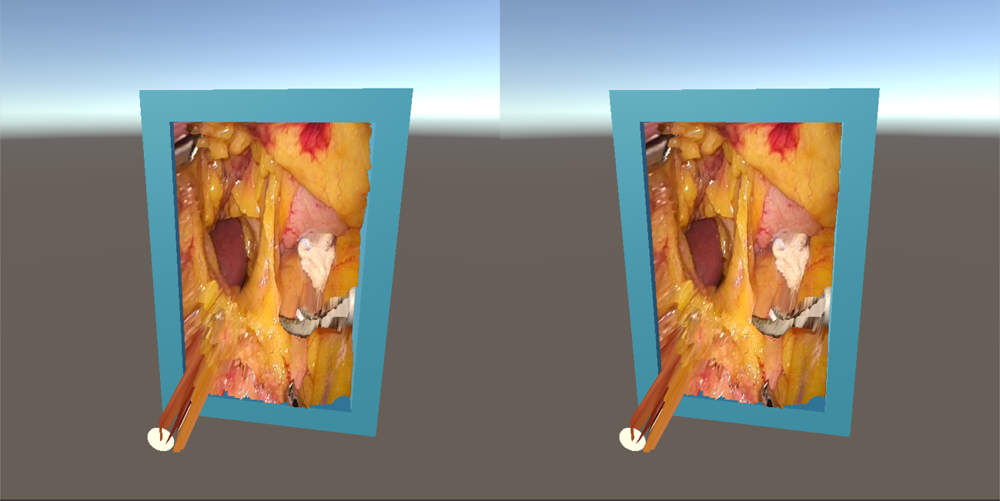

「玄白」は2つの内視鏡から映像を取り込むことにより
内視鏡手術の支援を行うことができるソフトウェアです．
内視鏡の映像をヘッドマウントディスプレイなどの機材を使わずに3Dかつ，
リアルタイムで可視化することができる環境を提案します．
「玄白」は，内視鏡を使用する上で大きな難点である
「立体感の把握の難しさ」を解決することを目指しています．
医者は2D画像の立体感の把握が難しいと考えている人もいる様です．
2D画像は，表示している物体を立体的に把握するには向いていません．
そのため，私たちは2D画像を3D画像にリアルタイムで変換することにより，
難なく内視鏡を使える環境を提供します．
「玄白」は，内視鏡を使用する上で大きな難点である
「立体感の把握の難しさ」の解決を目指してます．

杉田玄白は江戸時代にオランダの医学を介して
日本に伝えられた蘭方医学の先駆けとして活躍した蘭方医の一人です．
そして，日本の医療を飛躍させた医書「解体新書」の著者でもあります．
解体新書は実際の臓器と解剖図を一致させ，概念に実態を与えました．
私たちは玄白が作りあげた解体新書の様に内視鏡を通して，
「臓器が手に取る様にわかるものにしたい」
という想いから本ソフトウェアに「玄白」と名付けました．
© salesian polytechnic